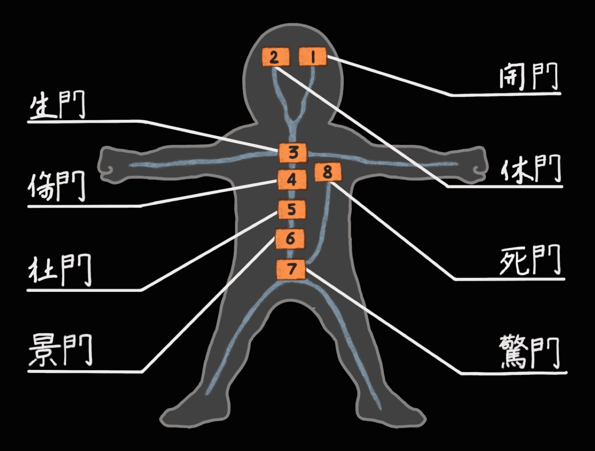

UPPER A
força · peito · costas
SUGERIDO: UAO trabalho duro supera o talento.
努力は天才に勝る。
Progressão 伸
Kaimon
Portão da Abertura
Cada sessão pesada registrada é chakra acumulado. Os portões não se abrem com talento — se abrem com presença. O lótus de Konoha floresce duas vezes.

Finishers completados — o que separa treino de treinamento.
Semana 週
pesados
Upper/Lower 2× — frequência 2 por músculo. A grade reseta toda segunda.
Cardio Zona 2 · 30–40 min. Constrói a base aeróbica que sustenta os portões.
Descanso ou recuperação ativa: caminhada, mobilidade, Z2 leve. O corpo abre portão no silêncio.
Bateu o teto da faixa em TODAS as séries → sobe a carga e volta ao piso. Superiores: +2,5 kg. Inferiores e leg press: +5 kg. Halteres: próximo par. Máquinas: +1 placa (placa grande demais → fica 1 sessão extra no peso).
Antes da 1ª série válida do primeiro exercício: barra×10 · 40%×6 · 60%×4 · 80%×2. Tira a decisão da cabeça de um cara cansado.
2 sessões seguidas abaixo do piso da faixa já na 1ª série → reduz 10% e reconstrói. Em residência, estagnar geralmente é sono e estresse — não fraqueza.
A cada 5–6 semanas: metade das séries, ~85–90% da carga, sem finishers. ANTECIPE para a semana brutal de plantões já conhecida — o calendário do hospital manda mais que o do treino. Gatilho reativo: sono <6h por 3+ noites ou 2 sessões seguidas caindo.
0 sessões registradas no total